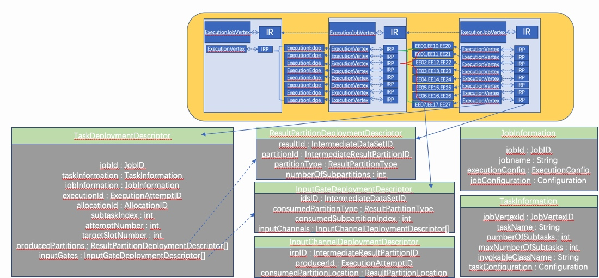

Flink源码阅读笔记–集群启动篇
构建MiniCluster
上一篇中分析到LocalStreamEnvironment的execute方法中生成JobGraph的过程。本篇接着分析剩下部分。
MiniCluster.start
1 | public void start() throws Exception { |
构建RPC Service
1 | commonRpcService = createRpcService(configuration, rpcTimeout, false, null); |
再进去看看细节1
2
3
4
5
6
7
8
9
10
11
12
13
14
15
16
17
18
19
20protected RpcService createRpcService(
Configuration configuration,
Time askTimeout,
boolean remoteEnabled,
String bindAddress) {
final Config akkaConfig;
if (remoteEnabled) {
akkaConfig = AkkaUtils.getAkkaConfig(configuration, bindAddress, 0);
} else {
akkaConfig = AkkaUtils.getAkkaConfig(configuration);
}
final Config effectiveAkkaConfig = AkkaUtils.testDispatcherConfig().withFallback(akkaConfig);
final ActorSystem actorSystem = AkkaUtils.createActorSystem(effectiveAkkaConfig);
return new AkkaRpcService(actorSystem, askTimeout);
}
先用AkkaConfig创建了ActorSystem,然后用AkkaRpcService封装了ActorSystem
构建HaService
1 | haServices = HighAvailabilityServicesUtils.createAvailableOrEmbeddedServices( |
实际构建了一个EmbeddedHaServices。
EmbeddedHaServices中有resourceManagerLeaderService，dispatcherLeaderService，jobManagerLeaderServices（都是EmbeddedLeaderService）。
每个EmbeddedLeaderService可以创建EmbeddedLeaderElectionService，通过EmbeddedLeaderElectionService.start将EmbeddedLeaderElectionService关联到一个具体实体；然后EmbeddedLeaderService可以给对应的EmbeddedLeaderElectionService发送GrantLeadershipCall指令。
每个EmbeddedLeaderService也可以创建EmbeddedLeaderRetrievalService，通过EmbeddedLeaderRetrievalService.start将EmbeddedLeaderRetrievalService关联到一个具体实体的内部类；然后EmbeddedLeaderService可以发送NotifyOfLeaderCall，最终调用到对应实体的内部类
创建BlobServer（不重要）
构建HeartbeatServices
1 | heartbeatServices = HeartbeatServices.fromConfiguration(configuration); |
通过HeartbeatServices.createHeartbeatManagerSender可以创建HeartbeatManagerSenderImpl（通常会传入一个内部类HeartbeatListener处理对方实体的心跳丢失情况）。
HeartbeatManagerSenderImpl包含若干个HeartbeatMonitor，通过monitorTarget方法可以增加HeartbeatMonitor(对方的RPC实体->匿名HeartbeatTarget->HeartbeatMonitor)。
HeartbeatManagerSenderImpl本身是一个定时线程，轮询每个HeartbeatMonitor.HeartbeatTarget.requestHeartbeat。
HeartbeatManagerSenderImpl还包含receiveHeartbeat，调用对应的HeartbeatMonitor.reportHeartbeat。HeartbeatMonitor可以将超时信息发送给HeartbeatListener。
通过HeartbeatServices.createHeartbeatManager可以创建HeartbeatManagerImpl（通常会传入一个内部类HeartbeatListener处理对方实体的心跳丢失情况）
HeartbeatManagerImpl包含若干个HeartbeatMonitor，通过monitorTarget方法可以增加HeartbeatMonitor(对方的RPC实体->匿名HeartbeatTarget->HeartbeatMonitor)。
HeartbeatManagerImpl.requestHeartbeat里面主要做两件事1.调用对应的HeartbeatMonitor.reportHeartbeat。HeartbeatMonitor可以将超时信息发送给HeartbeatListener 2.HeartbeatMonitor.HeartbeatTarget.receiveHeartbeat
1 | // 例如在ResourceManager中收到TaskExecutor注册时，会调用monitorTarget |
启动ResourceManager
先创建ResourceManagerRunner，再调用ResourceManagerRunner.start
ResourceManagerRunner的核心在于StandaloneResourceManager，主要是指向SlotManager和JobLeaderIdService
启动BlobCacheService（不重要）
启动TaskManager
1 | protected TaskExecutor[] startTaskManagers( |
先执行TaskManagerRunner.startTaskManager创建TaskExecutor（创建TaskExecutor时先构造TaskManagerServices），再执行TaskExecutor.start。
TaskManagerServices
—->NetworkEnvironment
——–>NetworkBufferPool
——–>LocalConnectionManager
——–>ResultPartitionManager
——–>TaskEventDispatcher
——–>KvStateRegistry
—->MemoryManager(没什么用)
—->IOManager(Spill目录java.io.tmpdir/flink-io-UUID，一个读线程、一个写线程)
—->BroadcastVariableManager
—->TaskSlotTable(维护Slots)
—->JobManagerTable(维护JobId和JM关系的)
—->JobLeaderService(注意与JobLeaderIdService相区别，TM维护和JM连接的)
—->TaskExecutorLocalStateStoresManager(java.io.tmpdir/localState)
TaskExecutor.start会远程调用ResourceManager.registerTaskExecutor，此时将向ResourceManager汇报自己的节点情况和增加心跳相关信息；成功后将调用ResourceManager.sendSlotReport发送Slot报告并接收心跳信息。
ResourceManager.sendSlotReport
—->SlotManager.registerTaskManager
———>注册TaskManagerRegistration
———>SlotManager.registerSlot
————->创建TaskManagerSlot并加入
启动StandaloneDispatcher
StandaloneDispatcher包括的属性有几个比较特别，DefaultJobManagerRunnerFactory，StandaloneRunningJobsRegistry。
runningJobsRegistry
jobManagerRunnerFutures
MiniCluster.executeJobBlocking
先调用StandaloneDispatcher.submitJob；再调用StandaloneDispatcher.requestJobResult。
注意这里Dispatcher是一个入口，它接受任务并完成它
StandaloneDispatcher.submitJob
主要工作是创建JobManagerRunner并start它。实际是创建JobMaster并启动它。
- 创建JobManagerRunner（本身没有什么），其中包含JobMaster
- 会主动往TM发送心跳
- 同时接收RM的心跳
- 创建RestartStrategy
- 创建SlotPool
- 创建ExecutionGraph。关键是ExecutionGraph.attachJobGraph
- JobManagerRunner.start
先往runningJobsRegistry注册； 最终调用到JobMaster.start
JobMaster.start
进入到JobMaster，在其中：
- 启动相关服务
- SlotPool.start
- 向ResourceManager发起注册
- 调用ResourceManager.registerJobManager;
- JobMaster.establishResourceManagerConnection
- 部署任务。核心是调用ExecutionGraph.scheduleForExecution
- Execution.allocateAndAssignSlotForExecution申请资源
- 对于每一个Execution调用其Execution.deploy
Execution.allocateAndAssignSlotForExecution
先计算preferredLocation
①节点本身Preferred的Locations只有ExecutionVertex.getPreferredLocations自己知道。而ExecutionVertex.getPreferredLocations内容是取自己上游的Execution的TaskManagerLocation集合作为PreferredLocations
②结合一个策略（默认是ALL，意味着ExecutionVertex.getPreferredLocations取出的候选都要确定，自己才继续申请slot）SlotPool.allocateSlot，参数ScheduledUnit(Execution, SlotSharingGroupId)和SlotProfile(ResourceProfile, preferredLocations)
- 将LogicalSlot中的TaskManagerLocation信息设置到Execution中
Execution.deploy
调用ExecutionVertex.createDeploymentDescriptor
每个ExecutionVertex可能会有多个IRP；也会有多个inputs。
（注意，现在的模式是一个consumer对应一个IRP）每个IRP生成一个ResultPartitionDeploymentDescriptor。
对于每一个上游生成一个InputGateDeploymentDescriptor，对于每一个上游里面的每个Partition生成一个InputChannelDeploymentDescriptor
TaskExecutor.submitTask